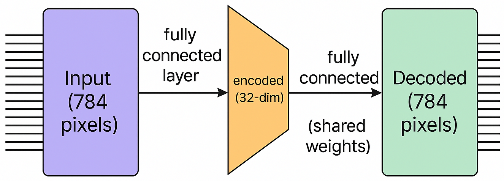
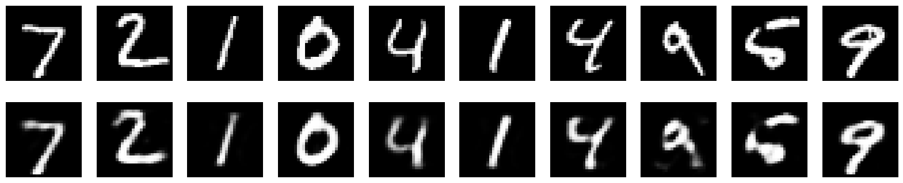

6. Autoencoders#

Los autoencoders han sido propuestos como métodos para la reducción de dimensionalidad. Un autoencoder consta de dos partes, el codificador y el decodificador. La salida del
codificador es la representación reducida del patrón de entrada, y se define en términos de una función vectorial\[ \boldsymbol{g}_{\phi}:~\boldsymbol{x}\in\mathbb{R}^{l}\longmapsto\boldsymbol{z}\in\mathbb{R}^{m}, \]donde
\[ z_{i}:=g_{\phi, i}(\boldsymbol{x})=\phi_{e}(\boldsymbol{\theta}_{i}^{T}\boldsymbol{x}+b_{i}),\quad i=1,2,\dots,m, \]con \(\phi_{e}\) función de activación; esta última suele tomarse como la función sigmoidea logística \(\phi_{e}(\cdot)=\sigma(\cdot)\). En otras palabras, el codificador es una red neuronal feed-forward de una sola capa oculta
El
decodificadores otra función \(\boldsymbol{f}_{\theta}\).\[ \boldsymbol{f}_{\theta}:~\boldsymbol{z}\in\mathbb{R}^{m}\longmapsto\boldsymbol{x}'\in\mathbb{R}^{l}, \]donde
\[ \hat{x}_{j}=f_{\theta, j}(\boldsymbol{z})=\phi_{d}(\boldsymbol{\theta}'^{T}\boldsymbol{z}+b_{j}'),\quad j=1,\dots,l. \]La función de activación \(\phi_{d}\) suele ser la identidad (reconstrucción lineal) o la sigmoidea logística.
La tarea de entrenamiento consiste en estimar los parámetros
Es habitual suponer que \(\Theta'=\Theta^{T}\). Los parámetros se estiman para que el error de reconstrucción \(\boldsymbol{e}=\boldsymbol{x}-\boldsymbol{x}'\), sobre las muestras de entrada disponibles sea mínimo. Normalmente, se utiliza el coste por mínimos cuadrados pero también son posibles otras opciones.
Las versiones regularizadas, que implican una norma de los parámetros, también es una posibilidad. Si se elige que la activación \(\phi_{e}\) sea la identidad (representación lineal) y \(m < l\) (para evitar la trivialidad), el autoencoder es equivalente a la técnica PCA.
6.1. Aplicación: Autoencoders para MNIST data#
import numpy as np
import matplotlib.pyplot as plt
from tensorflow.keras.datasets import mnist
from tensorflow.keras.models import Model
from tensorflow.keras.layers import Input, Dense
import warnings
warnings.filterwarnings('ignore')
{kind=link}

A continuación
Se cargan los datos del conjunto MNIST, que contiene imágenes de dígitos escritos a mano.
Cada muestra es una imagen en escala de grises de 28×28 píxeles.
Se ignoran las etiquetas de clase (
_) porque el objetivo es reconstruir las imágenes (no clasificarlas), tal como se requiere en tareas de autoencoders.
(x_train, _), (x_test, _) = mnist.load_data()
print("Forma original de x_train:", x_train.shape)
print("Forma original de x_test:", x_test.shape)
Forma original de x_train: (60000, 28, 28)
Forma original de x_test: (10000, 28, 28)
Se normalizan los valores de los píxeles de las imágenes, originalmente en el rango [0, 255], para que estén en el intervalo [0, 1]. La normalización facilita el entrenamiento del modelo al mejorar la estabilidad numérica y acelerar la convergencia del optimizador. Se convierte el tipo de dato a
float32para asegurar compatibilidad con las operaciones enTensorFlow/Keras.
x_train = x_train.astype('float32') / 255.
x_test = x_test.astype('float32') / 255.
Cada imagen del conjunto de datos MNIST tiene dimensiones 28×28, es decir, 784 píxeles. Estas imágenes se transforman en vectores unidimensionales de 784 elementos para que puedan ser procesadas por capas densas (
Dense) del autoencoder. Esta transformación no altera la información de la imagen, solo su forma (reshape) para adaptarse a la entrada del modelo.
x_train = x_train.reshape((len(x_train), 784))
x_test = x_test.reshape((len(x_test), 784))
print("Forma después del reshape de x_train:", x_train.shape)
print("Forma después del reshape de x_test:", x_test.shape)
Forma después del reshape de x_train: (60000, 784)
Forma después del reshape de x_test: (10000, 784)
input_img = Input(shape=(784,)):
Se define la capa de entrada del modelo, correspondiente a una imagen aplanada de 784 píxeles.encoded = Dense(32, activation='relu')(input_img):
Esta capa es el codificador, que transforma la imagen de entrada en una representación latente de 32 dimensiones utilizando una función de activación ReLU.decoded = Dense(784, activation='sigmoid')(encoded):
Esta capa actúa como decodificador, intentando reconstruir la imagen original a partir de la representación latente.sigmoidse adapta bien cuando se usa la función de pérdidabinary_crossentropy, ya que esa pérdida espera que la salida esté entre 0 y 1. Asegura que los valores de salida no sean negativos ni mayores a 1, lo que tendría poco sentido en términos de imágenes normalizadas.autoencoder = Model(input_img, decoded):
Se define el modelo completo del autoencoder, que aprende a mapear una imagen a su reconstrucción.
input_img = Input(shape=(784,))
encoded = Dense(32, activation='relu')(input_img)
decoded = Dense(784, activation='sigmoid')(encoded)
autoencoder = Model(input_img, decoded)
autoencoder.compile(...):
Se compila el modelo autoencoder, especificando el optimizador y la función de pérdida.optimizer='adam':
Se utiliza el optimizador Adam, ampliamente usado en redes neuronales por su eficiencia y capacidad de adaptación del aprendizaje.loss='binary_crossentropy':
Se emplea la entropía cruzada binaria como función de pérdida, apropiada en tareas de reconstrucción donde los valores de salida están en el rango [0, 1].
autoencoder.compile(optimizer='adam', loss='binary_crossentropy')
autoencoder.fit(...):
Entrena el modelo autoencoder utilizando como entrada y objetivo los mismos datos, dado que la tarea es de reconstrucción.x_train, x_train:
Se entrena el modelo para que aprenda a reproducir su entrada como salida.epochs=50:
El entrenamiento se realiza durante 50 épocas completas sobre el conjunto de datos.batch_size=256:
El tamaño del mini-batch para cada actualización de parámetros es de 256 muestras.shuffle=True:
Se mezclan aleatoriamente las muestras en cada época para mejorar la generalización.validation_data=(x_test, x_test):
Se utiliza el conjunto de prueba para evaluar la pérdida de validación y así monitorear el sobreajuste.
autoencoder.fit(x_train, x_train,
epochs=50,
batch_size=256,
shuffle=True,
validation_data=(x_test, x_test))
Epoch 1/50
WARNING: All log messages before absl::InitializeLog() is called are written to STDERR
I0000 00:00:1762262123.911098 3197 service.cc:146] XLA service 0x5c15adeb5240 initialized for platform CUDA (this does not guarantee that XLA will be used). Devices:
I0000 00:00:1762262123.911161 3197 service.cc:154] StreamExecutor device (0): NVIDIA GeForce RTX 4070, Compute Capability 8.9
2025-11-04 08:15:23.983188: I tensorflow/compiler/mlir/tensorflow/utils/dump_mlir_util.cc:268] disabling MLIR crash reproducer, set env var `MLIR_CRASH_REPRODUCER_DIRECTORY` to enable.
138/235 ━━━━━━━━━━━━━━━━━━━━ 0s 1ms/step - loss: 0.4416
I0000 00:00:1762262125.412862 3197 device_compiler.h:188] Compiled cluster using XLA! This line is logged at most once for the lifetime of the process.
235/235 ━━━━━━━━━━━━━━━━━━━━ 3s 7ms/step - loss: 0.3807 - val_loss: 0.1879
Epoch 2/50
235/235 ━━━━━━━━━━━━━━━━━━━━ 0s 1ms/step - loss: 0.1794 - val_loss: 0.1553
Epoch 3/50
235/235 ━━━━━━━━━━━━━━━━━━━━ 0s 1ms/step - loss: 0.1507 - val_loss: 0.1347
Epoch 4/50
235/235 ━━━━━━━━━━━━━━━━━━━━ 0s 1ms/step - loss: 0.1323 - val_loss: 0.1221
Epoch 5/50
235/235 ━━━━━━━━━━━━━━━━━━━━ 0s 1ms/step - loss: 0.1210 - val_loss: 0.1133
Epoch 6/50
235/235 ━━━━━━━━━━━━━━━━━━━━ 0s 1ms/step - loss: 0.1131 - val_loss: 0.1070
Epoch 7/50
235/235 ━━━━━━━━━━━━━━━━━━━━ 0s 1ms/step - loss: 0.1069 - val_loss: 0.1024
Epoch 8/50
235/235 ━━━━━━━━━━━━━━━━━━━━ 0s 1ms/step - loss: 0.1027 - val_loss: 0.0991
Epoch 9/50
235/235 ━━━━━━━━━━━━━━━━━━━━ 0s 1ms/step - loss: 0.0998 - val_loss: 0.0969
Epoch 10/50
235/235 ━━━━━━━━━━━━━━━━━━━━ 0s 2ms/step - loss: 0.0977 - val_loss: 0.0954
Epoch 11/50
235/235 ━━━━━━━━━━━━━━━━━━━━ 0s 2ms/step - loss: 0.0962 - val_loss: 0.0944
Epoch 12/50
235/235 ━━━━━━━━━━━━━━━━━━━━ 0s 1ms/step - loss: 0.0956 - val_loss: 0.0937
Epoch 13/50
235/235 ━━━━━━━━━━━━━━━━━━━━ 0s 1ms/step - loss: 0.0948 - val_loss: 0.0934
Epoch 14/50
235/235 ━━━━━━━━━━━━━━━━━━━━ 0s 2ms/step - loss: 0.0944 - val_loss: 0.0931
Epoch 15/50
235/235 ━━━━━━━━━━━━━━━━━━━━ 0s 2ms/step - loss: 0.0943 - val_loss: 0.0927
Epoch 16/50
235/235 ━━━━━━━━━━━━━━━━━━━━ 0s 1ms/step - loss: 0.0941 - val_loss: 0.0926
Epoch 17/50
235/235 ━━━━━━━━━━━━━━━━━━━━ 0s 1ms/step - loss: 0.0934 - val_loss: 0.0925
Epoch 18/50
235/235 ━━━━━━━━━━━━━━━━━━━━ 0s 1ms/step - loss: 0.0937 - val_loss: 0.0923
Epoch 19/50
235/235 ━━━━━━━━━━━━━━━━━━━━ 0s 1ms/step - loss: 0.0935 - val_loss: 0.0922
Epoch 20/50
235/235 ━━━━━━━━━━━━━━━━━━━━ 0s 2ms/step - loss: 0.0933 - val_loss: 0.0922
Epoch 21/50
235/235 ━━━━━━━━━━━━━━━━━━━━ 0s 2ms/step - loss: 0.0932 - val_loss: 0.0920
Epoch 22/50
235/235 ━━━━━━━━━━━━━━━━━━━━ 0s 1ms/step - loss: 0.0934 - val_loss: 0.0921
Epoch 23/50
235/235 ━━━━━━━━━━━━━━━━━━━━ 0s 1ms/step - loss: 0.0932 - val_loss: 0.0919
Epoch 24/50
235/235 ━━━━━━━━━━━━━━━━━━━━ 0s 1ms/step - loss: 0.0929 - val_loss: 0.0919
Epoch 25/50
235/235 ━━━━━━━━━━━━━━━━━━━━ 0s 1ms/step - loss: 0.0930 - val_loss: 0.0919
Epoch 26/50
235/235 ━━━━━━━━━━━━━━━━━━━━ 0s 1ms/step - loss: 0.0929 - val_loss: 0.0918
Epoch 27/50
235/235 ━━━━━━━━━━━━━━━━━━━━ 0s 1ms/step - loss: 0.0928 - val_loss: 0.0918
Epoch 28/50
235/235 ━━━━━━━━━━━━━━━━━━━━ 0s 1ms/step - loss: 0.0930 - val_loss: 0.0918
Epoch 29/50
235/235 ━━━━━━━━━━━━━━━━━━━━ 0s 1ms/step - loss: 0.0928 - val_loss: 0.0917
Epoch 30/50
235/235 ━━━━━━━━━━━━━━━━━━━━ 0s 1ms/step - loss: 0.0930 - val_loss: 0.0918
Epoch 31/50
235/235 ━━━━━━━━━━━━━━━━━━━━ 0s 1ms/step - loss: 0.0929 - val_loss: 0.0916
Epoch 32/50
235/235 ━━━━━━━━━━━━━━━━━━━━ 0s 1ms/step - loss: 0.0929 - val_loss: 0.0916
Epoch 33/50
235/235 ━━━━━━━━━━━━━━━━━━━━ 0s 1ms/step - loss: 0.0927 - val_loss: 0.0916
Epoch 34/50
235/235 ━━━━━━━━━━━━━━━━━━━━ 0s 1ms/step - loss: 0.0929 - val_loss: 0.0916
Epoch 35/50
235/235 ━━━━━━━━━━━━━━━━━━━━ 0s 1ms/step - loss: 0.0924 - val_loss: 0.0916
Epoch 36/50
235/235 ━━━━━━━━━━━━━━━━━━━━ 0s 1ms/step - loss: 0.0926 - val_loss: 0.0917
Epoch 37/50
235/235 ━━━━━━━━━━━━━━━━━━━━ 0s 1ms/step - loss: 0.0927 - val_loss: 0.0916
Epoch 38/50
235/235 ━━━━━━━━━━━━━━━━━━━━ 0s 1ms/step - loss: 0.0929 - val_loss: 0.0917
Epoch 39/50
235/235 ━━━━━━━━━━━━━━━━━━━━ 0s 1ms/step - loss: 0.0928 - val_loss: 0.0915
Epoch 40/50
235/235 ━━━━━━━━━━━━━━━━━━━━ 0s 1ms/step - loss: 0.0928 - val_loss: 0.0915
Epoch 41/50
235/235 ━━━━━━━━━━━━━━━━━━━━ 0s 1ms/step - loss: 0.0927 - val_loss: 0.0916
Epoch 42/50
235/235 ━━━━━━━━━━━━━━━━━━━━ 0s 1ms/step - loss: 0.0926 - val_loss: 0.0915
Epoch 43/50
235/235 ━━━━━━━━━━━━━━━━━━━━ 0s 1ms/step - loss: 0.0925 - val_loss: 0.0915
Epoch 44/50
235/235 ━━━━━━━━━━━━━━━━━━━━ 0s 1ms/step - loss: 0.0926 - val_loss: 0.0915
Epoch 45/50
235/235 ━━━━━━━━━━━━━━━━━━━━ 0s 2ms/step - loss: 0.0925 - val_loss: 0.0915
Epoch 46/50
235/235 ━━━━━━━━━━━━━━━━━━━━ 0s 1ms/step - loss: 0.0926 - val_loss: 0.0915
Epoch 47/50
235/235 ━━━━━━━━━━━━━━━━━━━━ 0s 1ms/step - loss: 0.0927 - val_loss: 0.0914
Epoch 48/50
235/235 ━━━━━━━━━━━━━━━━━━━━ 0s 1ms/step - loss: 0.0927 - val_loss: 0.0915
Epoch 49/50
235/235 ━━━━━━━━━━━━━━━━━━━━ 0s 1ms/step - loss: 0.0927 - val_loss: 0.0915
Epoch 50/50
235/235 ━━━━━━━━━━━━━━━━━━━━ 0s 1ms/step - loss: 0.0927 - val_loss: 0.0915
<keras.src.callbacks.history.History at 0x7061501df2b0>
Define el modelo encoder que transforma una imagen de entrada (784 dimensiones) en su representación latente de 32 dimensiones. Este modelo extrae la parte de codificación del autoencoder original.
Crea un nuevo modelo decoder tomando como entrada una representación latente de 32 dimensiones y aplicando la última capa del autoencoder (la capa de decodificación). Esto permite reconstruir imágenes directamente desde sus representaciones codificadas, de forma independiente.
autoencoder.layers[-1]accede a la última capa del modelo autoencoder (elDense(784, activation='sigmoid'))
encoder = Model(input_img, encoded)
encoded_input = Input(shape=(32,))
decoder_layer = autoencoder.layers[-1]
decoder = Model(encoded_input, decoder_layer(encoded_input))
Codifica las imágenes de prueba transformándolas desde el espacio original (784 dimensiones) al espacio latente (64 dimensiones) mediante el modelo
encoder.Reconstruye las imágenes a partir de sus representaciones latentes usando el modelo
decoder.Este paso permite evaluar qué tan bien el autoencoder logra aproximar las imágenes originales.
encoded_imgs = encoder.predict(x_test)
decoded_imgs = decoder.predict(encoded_imgs)
313/313 ━━━━━━━━━━━━━━━━━━━━ 0s 821us/step
313/313 ━━━━━━━━━━━━━━━━━━━━ 0s 711us/step
Selecciona 10 imágenes del conjunto de prueba y configura el tamaño de la figura para mostrar una comparación clara entre las imágenes originales y sus reconstrucciones.
Primera fila: imágenes originales. Se toma la \(i\)-ésima imagen original, se remodela a su forma 2D (28×28) y se muestra en escala de grises sin ejes para mayor claridad.
Segunda fila: imágenes reconstruidas. Se visualiza la imagen generada por el autoencoder a partir de la codificación latente.
n = 10
plt.figure(figsize=(20, 4))
for i in range(n):
ax = plt.subplot(2, n, i + 1)
plt.imshow(x_test[i].reshape(28, 28), cmap="gray")
plt.axis('off')
ax = plt.subplot(2, n, i + 1 + n)
plt.imshow(decoded_imgs[i].reshape(28, 28), cmap="gray")
plt.axis('off')
plt.show()

Reconstrucción de imágenes
Se utiliza el modelo entrenado para generar reconstrucciones del conjunto de prueba, es decir, aproximaciones de las imágenes originales.Cálculo del Error Cuadrático Medio (MSE)
Se calcula el error cuadrático medio entre las imágenes originales y sus reconstrucciones. Este valor indica qué tan lejos están, en promedio, las imágenes reconstruidas de las originales.Estimación de la varianza total
Se computa la varianza de los datos originales del conjunto de prueba. Representa la cantidad total de información (variabilidad) presente en los datos sin comprimir.Cálculo de la variabilidad explicada
Se emplea la fórmula:\[ \text{Variabilidad explicada} = 1 - \frac{\text{MSE}}{\text{Varianza total}} \]Esta expresión indica qué fracción de la variación total en los datos originales ha sido retenida por el modelo de autoencoder. Es una métrica análoga al coeficiente de determinación (\(R^2\)) utilizado en modelos de regresión.
Interpretación del resultado
Un valor cercano a 1 sugiere que el autoencoder captura gran parte de la estructura de los datos. Un valor bajo indica que el modelo no ha logrado representar eficazmente la información original.
import numpy as np
decoded_imgs = autoencoder.predict(x_test)
mse = np.mean(np.square(x_test - decoded_imgs))
var_total = np.var(x_test)
var_explicada = 1 - (mse / var_total)
print("Variabilidad explicada por el autoencoder:", var_explicada)
313/313 ━━━━━━━━━━━━━━━━━━━━ 1s 935us/step
Variabilidad explicada por el autoencoder: 0.9004852250218391
En un autoencoder, el número de neuronas en la capa latente (bottleneck layer) representa la dimensión comprimida o el número de “componentes” aprendidos. Aunque no son componentes lineales como en PCA, son equivalentes en el sentido de que capturan una representación reducida de los datos. Por ejemplo, en el modelo:
encoded = Dense(32, activation='relu')(input_img)
Aquí el autoencoder utiliza 32 dimensiones latentes, lo que se puede comparar directamente con las 32 primeras componentes principales en PCA.
¿Cómo hacer una comparación justa con PCA?
Entrena un PCA con el mismo número de componentes:
from sklearn.decomposition import PCA pca = PCA(n_components=32) X_pca = pca.fit_transform(x_test) X_reconstructed = pca.inverse_transform(X_pca)
Calcula el MSE y la variabilidad explicada del PCA, de la misma forma que hiciste con el autoencoder:
mse_pca = np.mean(np.square(x_test - X_reconstructed)) var_total = np.var(x_test) var_explicada_pca = 1 - (mse_pca / var_total)
Compara valores:
Variabilidad explicada por el Autoencoder
Variabilidad explicada por el PCA
Esto te dirá cuál técnica preserva mejor la estructura de los datos bajo la misma cantidad de compresión (32 dimensiones, por ejemplo).
from sklearn.decomposition import PCA
pca = PCA(n_components=32)
X_pca = pca.fit_transform(x_test)
X_reconstructed = pca.inverse_transform(X_pca)
mse_pca = np.mean(np.square(x_test - X_reconstructed))
var_total = np.var(x_test)
var_explicada_pca = 1 - (mse_pca / var_total)
print("Variabilidad explicada por el PCA:", var_explicada_pca)
Variabilidad explicada por el PCA: 0.8270165622234344